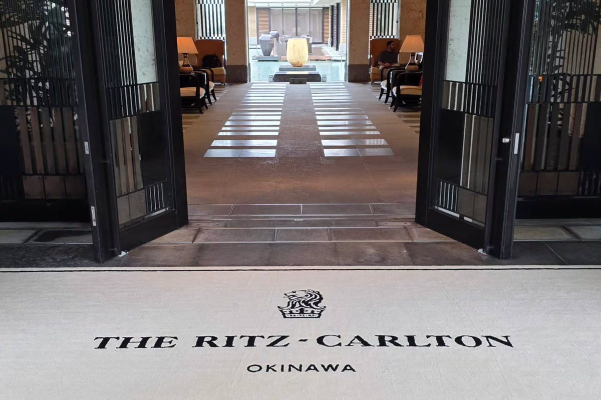

ステータスとマイルを、数字で判断する。
航空・ホテルのステータス制度とマイルについて、一次情報の確認と費用の試算だけを行うメディアです。「なんとなくお得そう」で損をしないための、判断材料を置きます。
JGC入会の目安
Life Status 1,500ポイント
サファイア到達（年間）
50,000 FOP
1マイルの価値（計算例の範囲）
0.83〜4.00円
このサイトはアフィリエイトプログラムを利用する場合があります。広告を含む記事には「PR」と明記します。方針は運営者情報と広告・編集方針をご覧ください。
このサイトでやること
航空会社とホテルのステータス制度は、条件が複雑で、しかも頻繁に変わります。「なんとなくお得そう」で動くと、たいてい損をします。このサイトでは、次の3つだけを扱います。
1. 制度変更の確認
ルール変更や条件改定の直後に、公式情報で「何がどう変わったか」を確認します。
2. 費用の試算
ステータス取得・維持にかかる実費と、特典の価値を、計算ツールと数字で比べます。
3. 期限前の判断
年度末やキャンペーン期限の前に、「あとどれだけ使えば届くか／届いても割に合うか」を判断する材料を出します。
記事
JGCの入会条件は今どうなっているか — Life Status 1,500ポイントとFLY ONの違い制度確認：JAL公式の現行条件を確認し、混同しやすい2つの仕組みを整理しました。 特典航空券は本当にお得か — 1マイルの価値を計算する方法費用試算：現金価格と比べるための「1マイルあたりの価値」の出し方と、計算ツールの使い方。
ステータス維持に「あといくらまで」なら払ってよいか — 判断の枠組み判断：便益の見積もり方と、撤退ラインの決め方。 エポスカードの海外旅行保険は使えるか — 利用付帯の条件と補償額を公式情報で確認制度確認・費用試算：年会費無料のカード付帯保険が機能する条件と、対象外になる支払い・人を整理しました。 海外旅行の通信はどう選ぶか — Wi-Fiレンタル・eSIM・ローミングの費用と条件を公式情報で比較制度確認・費用試算：3つの方法の料金の形の違いと、グアム5日間の総額試算を整理しました。 海外旅行の持ち物チェックリスト — 機内・預託・現地の3場面で仕分けする旅の実務：液体物とバッテリーのルールを先に固定し、場面別のリストと定番品を整理しました。計算ツール
ホテルは公式サイトと予約サイト、どちらで予約すべきか — ステータス実績が付く条件を3チェーンの公式規約で確認制度確認・費用試算：第三者サイト予約の扱いを3チェーンの規約で確認し、価格差の分かれ目を試算しました。 マイル価値の計算ツール必要マイルと現金価格を入れるだけで、1マイルあたりの価値と損得の目安が出ます。結果はバンド図でも表示します。 FLY ON ポイント到達コスト試算ツール試算：目標ステータスまであと何便・いくらか。不足FOP、必要便数、月あたりのペース、FOP単価が出ます。制度変更アラート（無料）
JAL・ANAのステータス制度、カードの条件、ふるさと納税のルールに変更があったとき、メールでお知らせします。登録フォーム（運営：globe Entertainment）